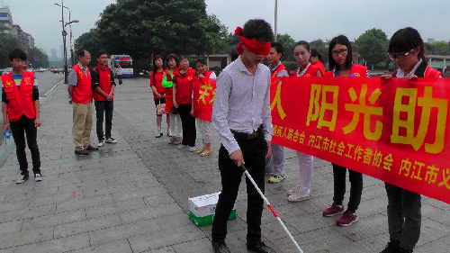

关爱残疾人 盲道体验
桂电志愿者网 日期：2015-05-25 来源：
2015年5月17日，是第25次全国助残日，在共青团内江市委的指导下，内江市义工联开展了主题为“关爱残疾人”的盲道体验活动，本次活动得到了内江市残疾人联合会、内江市社会工作者协会和内江市盲人协会的大力支持。
上午10:00,20余名义工来到位于市中区的大洲广场，主持人宣读活动倡议书后，体验正式开始，几名义工先体验了活动，内江市盲人协会主席段明仙体验了活动后表示：我与盲人接触得非常多，所以我很有感触，盲道就是盲人的生命线，希望社会各界的爱心人士不要占用盲道，给盲人以关爱和帮助，在公交车等其他地方看到盲人，能够帮帮他们。
活动吸引了数十位市民的围观，在义工的邀请下，二十余名市民也参与到体验活动中来，最小的体验者才3岁多，最大的70多岁，一位体验者在活动后说：蒙上眼睛，心里很害怕，总感觉前面有什么东西，通过体验，我觉得盲人是很需要帮助的，通过我们的亲身感受，影响和带动身边的人，在生活中遇到盲人的时候，我们可以给他们提供一些帮助，同时，我们可以劝导一些商贩不要占用盲道，保护盲人出行道路的安全。活动最后，段明仙主席感谢了参与活动的义工和市民，希望通过这样的活动，让更多人能够向盲人伸出援手，共同维护盲道秩序。

【责任编辑：李想】